Share one mouse and keyboard between two computers
Dyavon lets you move your pointer off the edge of one screen and onto another computer, then type and copy-paste there, as if both were one computer. This guide walks a first-time user through everything, step by step, with the screens they'll see.
- Both computersDownload Dyavon from GitHub, extract it, and open it.
- The computer whose mouse you useChoose Shares its mouse → press Pair a new device. A 6-digit code appears.
- The other computerChoose Is controlled → type the 6-digit code → press Pair.
- DoneBoth say Connected. Push your pointer past the screen edge and it appears on the other computer. Copy on one, paste on the other.
- Recommended, onceSettings → Startup → turn on Start at login on both, so you never have to open it by hand again.
Before you start
Only four things matter:
✅ Same network
Both computers on the same home or office network: the same Wi-Fi router, or a cable between them. It doesn't work over the internet.✅ Supported systems
Windows 10 or 11 (64-bit), or Linux with an X11 desktop. Any mix works: Windows ↔ Linux, either way round.✅ Dyavon on both
The same version on both computers. You download it twice (or copy the folder over).✅ Know which is which
The computer whose physical mouse and keyboard you'll use is the one that Shares its mouse. The other Is controlled.1 · Download from GitHub BASIC
Do this on both computers. No account and no sign-in needed.
- 1Open github.com/prashantpal8980/dyavon.
- 2On the right, under Releases, click Dyavon 1.0.0 Latest.
Ignore the list of folders in the middle. That's the source code, for developers.
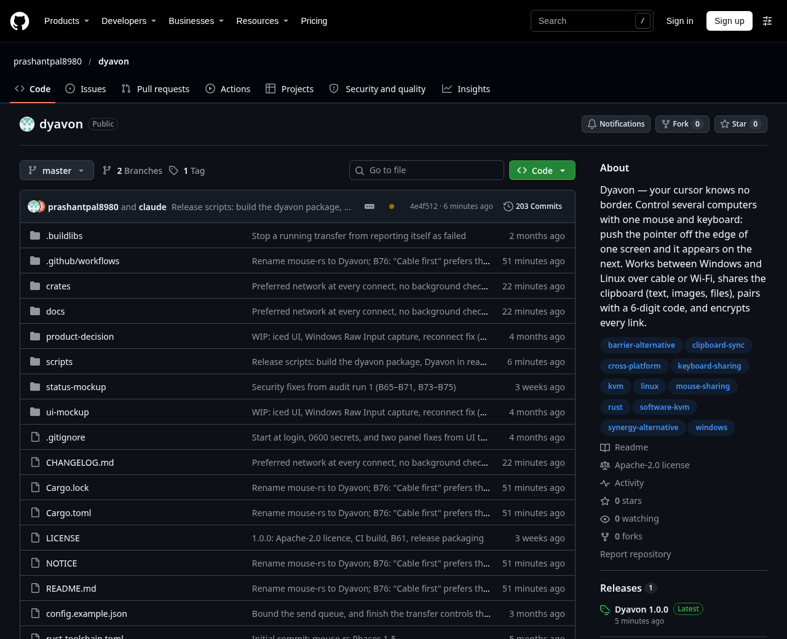
2 Click the release 1- 3Scroll down to Assets. Nine files are listed. You need only one:
- Windows:
dyavon-1.0.0-windows-x86_64.zip - Linux:
dyavon-1.0.0-linux-x86_64.tar.gz
- Windows:
The other files (latest.json, dyavon.exe, SHA256SUMS…) are used by Dyavon's automatic updates. You can ignore them.
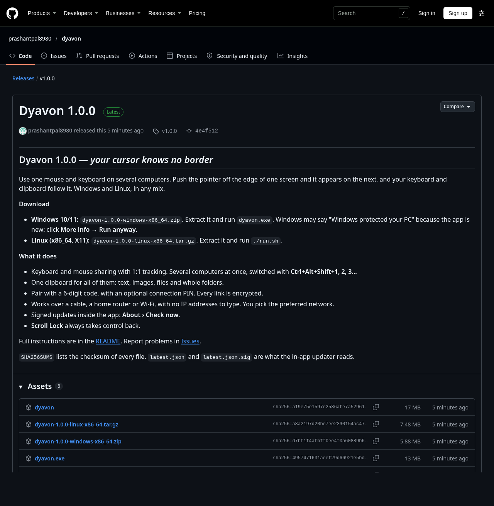
Windows: download this 3 Linux: this one2 · Open it on Windows WINDOWS
Windows shows up to three warnings the first time, and Dyavon offers to install itself. They're normal for a new free app that isn't code-signed yet. Here's each one and what to click.
a) "Isn't commonly downloaded" SOMETIMES
Some browsers, mostly Microsoft Edge, hold the download back because few people have downloaded this file yet.
- 1Hover the download and click ⋯ (or "Keep").
- 2Click Keep. If Edge asks again, click Show more → Keep anyway.
Chrome and Firefox usually download it without asking.
b) Extract the zip ALWAYS
- 1Open your Downloads folder.
- 2Right-click
dyavon-1.0.0-windows-x86_64.zip→ Extract All… → Extract. - 3A new folder opens. Double-click dyavon.exe.
dyavon.exe, but Windows would run it from a temporary folder, and your settings may not stick. Always Extract All first.Documents\dyavon: then the folder is the app.c) "Windows protected your PC" FIRST RUN ONLY
A blue screen appears the first time you open dyavon.exe. This is Microsoft SmartScreen. It says Unknown publisher because the app isn't code-signed yet. That doesn't mean it's harmful.
- 1Click the small More info link. The "Run anyway" button is hidden until you do.
- 2Click Run anyway.
Windows remembers this. You won't see it again for this copy.
Windows protected your PC
Microsoft Defender SmartScreen prevented an unrecognized app from starting. Running this app might put your PC at risk.
Windows protected your PC
Microsoft Defender SmartScreen prevented an unrecognized app from starting. Running this app might put your PC at risk.
d) Install Dyavon FIRST RUN ONLY
Dyavon offers to install itself. Installing gives you a desktop shortcut, a Start-menu entry and an entry in Settings › Apps, so it's easy to find and to remove later. It installs for you only, so it doesn't ask for administrator rights.
- 1Read the licence and disclaimer in the box, then switch on I accept the licence.
- 2Leave the options as they are, or change them. Start at login is worth turning on.
- 3Click Install. The window closes and the installed Dyavon opens straight away.
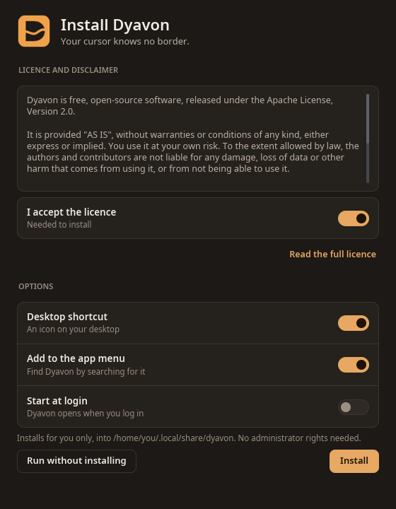
1 2 3e) Windows Firewall FIRST TIME IT CONNECTS
When Dyavon first starts sharing, Windows asks whether it may use the network. It needs this to talk to your other computer.
- 1Leave Private networks ticked. That's your home or office network.
- 2Click Allow access. Windows may ask for an administrator's permission.
Windows Defender Firewall has blocked some features of this app
f) "Running with normal permissions" ONE-TIME MESSAGE
A grey message at the top of the Dyavon window. It's only information: everything works normally. The one exception is that, while a Windows administrator window is in front (an installer, or a "Do you want to allow…" prompt), the pointer can't cross until you click elsewhere.
- 1Click Keep normal. That's right for almost everyone.
If that exception bothers you later, see Run as administrator under "Rarely needed".
2b · Open it on Linux LINUX
- 1Extract
dyavon-1.0.0-linux-x86_64.tar.gz: right-click → Extract Here, ortar xzf dyavon-1.0.0-linux-x86_64.tar.gz. - 2In the new folder, run
./run.sh. - 3Install Dyavon opens, the same screen as on Windows (step d above). Accept the licence and click Install: you get an app-menu entry and a desktop launcher, in
~/.local/share/dyavon, with no root needed. Or choose Run without installing. - 4If it says a library is missing, install it once:
sudo apt install libgtk-3-0 libayatana-appindicator3-1.
3 · Connect the two computers BASIC · ONCE
This is the only real setup, and it takes about a minute. Keep both Dyavon windows open, side by side if you can.
On the computer whose mouse you use ("Office-PC" in these pictures)
The window opens on "Let's connect a second computer".
- 1Choose Shares its mouse. It's already picked the first time; it has an orange border when chosen.
- 2Press Pair a new device.
Here Windows may show the firewall question from step 2d: click Allow access.
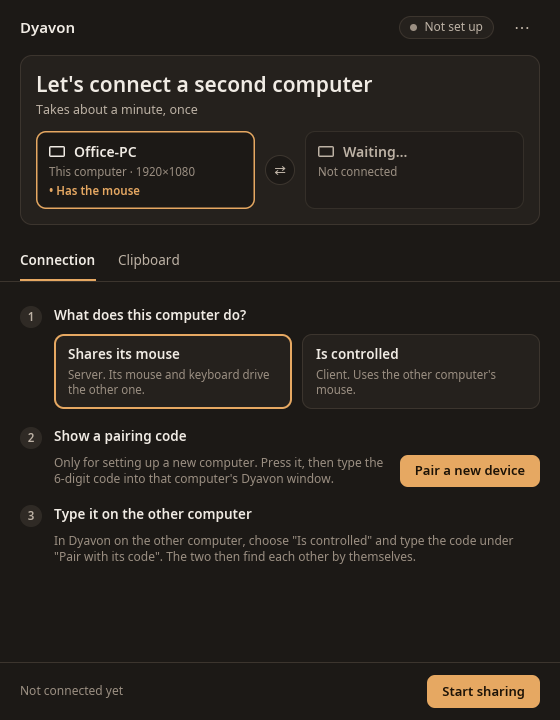
1 2 Press thisA big 6-digit code appears. Leave this window as it is and go to the other computer.
- The code is valid for 5 minutes and works once.
- If it runs out, press Pair a new device again for a fresh code.
- The status at the top reads "Waiting for the other computer…", which is expected.
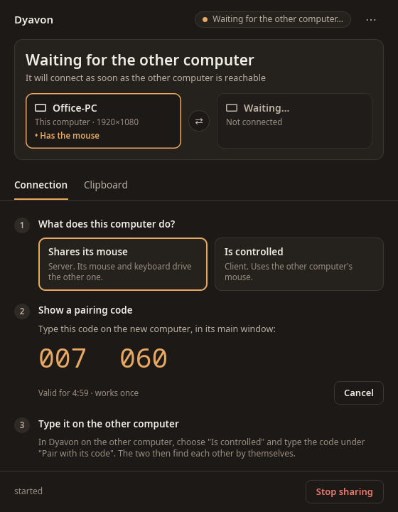
Type this on the other computerOn the other computer ("Laptop")
- 1Choose Is controlled.
- 2A message "Protect this computer with a PIN" appears. For now, click Not now. You can add a PIN later (see Sometimes useful).
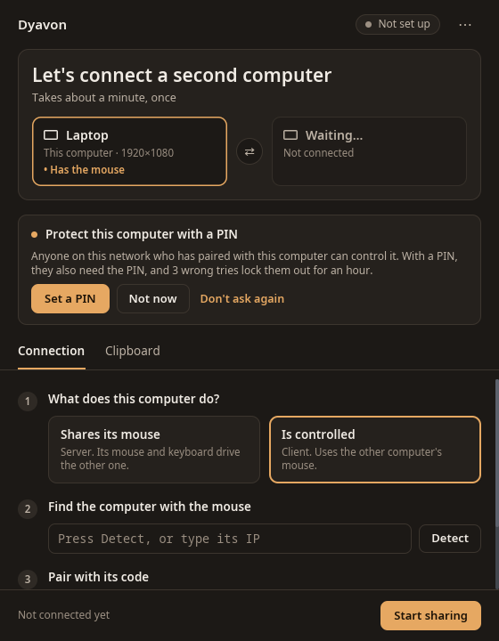
1 2 · Not now- 3Click the first box under "Pair with its code" and type the 6 digits shown on the other computer.
- 4Press Pair.
You don't need to fill in the address box in step 2. The two computers find each other by themselves.
192.168.1.20). Then press Pair again.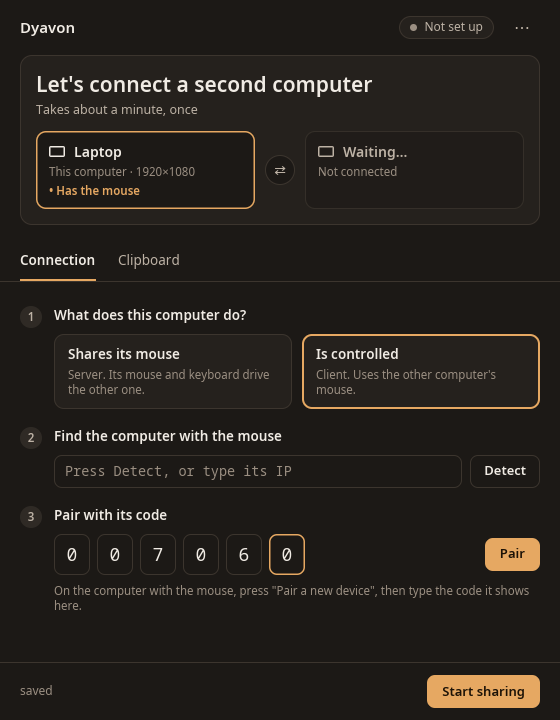
3 4 only if needed4 · Use it BASIC
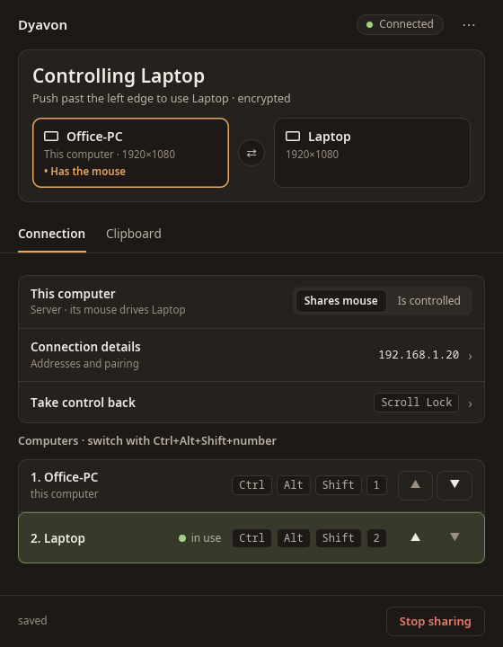
1 2 4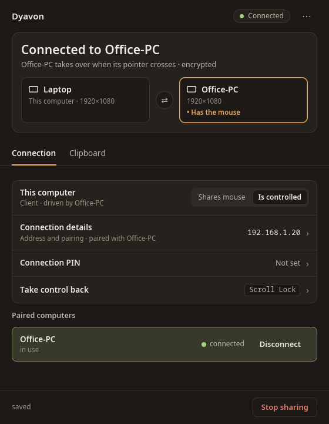
1 3- 1Connected (green dot) means it's working. Grey "Not set up" or orange "Waiting…" means it isn't connected yet.
- 2Move to the other computer: push your pointer past the edge it names, e.g. "Push past the left edge to use Laptop". Your keyboard follows the pointer. Move back the same way.
- 3Emergency exit: press Scroll Lock at any time to bring the pointer and keyboard straight home. It always works, even if the network drops. (Laptops without Scroll Lock: change the key in Settings → Keyboard & hotkeys.)
- 4Your paired computers. With more than one, you can jump straight to one with Ctrl+Alt+Shift+number.
Copy and paste between the computers
Just copy as usual (Ctrl+C) on one computer, move across, and paste (Ctrl+V) on the other. It works for text, images, files and folders.
- 1The Clipboard tab lists what you copied recently. The number is how many items.
- 2Click any item to copy it again. Pin keeps it at the top, and × removes it.
"Sent" means it was copied on this computer; "Received" means it came from the other one.
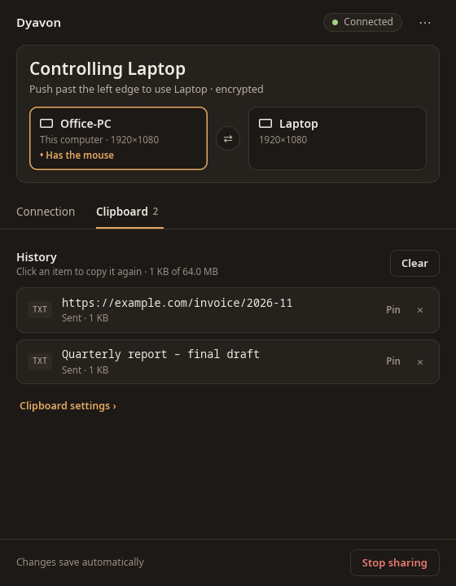
1 25 · Every day after that BASIC
Without "Start at login"
Opendyavon.exe on both computers. They reconnect by themselves within a few seconds. No code, no clicks.With "Start at login" (recommended)
Nothing at all. Turn the computers on, log in, and the pointer can cross. How to turn it on →Closing the window: the × or ⋯ → Quit Dyavon fully stops it, and sharing ends. Stop sharing (bottom-right) pauses sharing but keeps the window open.
Updates: when a new version comes out, a message "Version x.y is available" appears with an Update button. One click downloads it and checks that it really comes from Dyavon; then Restart Dyavon. Update both computers.
Messages you may see
Dyavon never pops up windows over your work. Messages appear as a strip at the top of its own window. Here's every one a normal user may meet:
| Message | What it means | What to do |
|---|---|---|
| Protect this computer with a PIN | Suggestion on the computer that is controlled. A PIN adds a second lock: even a paired computer must type it to take control. | Not now is fine at home. Set a PIN for offices or shared networks. Don't ask again hides it for good. |
| Running with normal permissions WIN | Information only. Admin windows (installers, UAC prompts) block crossing while they're in front. | Keep normal. |
| A computer is asking to control this one | The other computer is connecting, and this one has a PIN. | Type this computer's PIN on the other computer, in the box that appeared there. |
| file is ready to paste | The other computer copied a large file (over 16 MB). | Bring it over to fetch it now, or just paste: the paste waits for it. Always allow up to … MB raises the limit. |
| Restart needed | You changed a setting that applies when sharing restarts. | Restart sharing now (takes a second). |
| Version x.y is available | A newer Dyavon exists. | Update, or Later. |
| Version x.y is installed | The update downloaded and was verified. | Restart Dyavon now, or it applies the next time it starts. |
| The update did not install | Download or check failed. Nothing was changed. | Open download page takes you to GitHub to get it by hand. |
Settings, by importance
You don't need any of these to start: the defaults are chosen for a normal home setup. They're listed below in the order you're likely to care about them.
- 1Click ⋯ at the top-right of the window.
- 2Click Settings.
Settings is a list of categories, like a phone's Settings app. Every change saves automatically; there's no Save button. The ← arrow goes back.
Each page ends with a folded ▸ Advanced section. Most people never open those.
Legend: WORTH DOING ONCE SOMETIMES RARELY
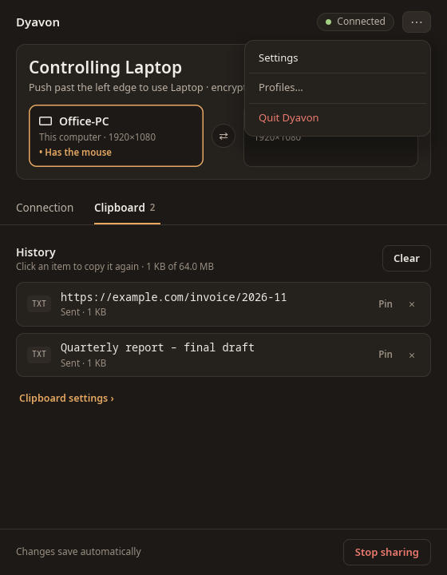
1 2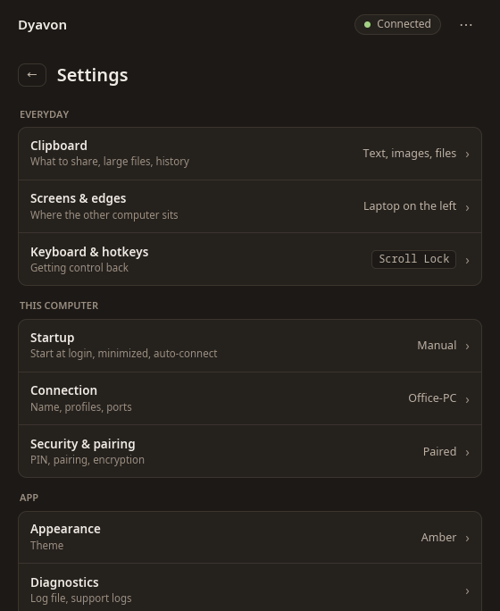
Map of Settings, by how often people need it
| Page | Importance |
|---|---|
| Startup | WORTH DOING ONCE |
| Screens & edges | WORTH DOING ONCE if the side is wrong |
| Clipboard | SOMETIMES |
| Security & pairing | SOMETIMES |
| Keyboard & hotkeys | SOMETIMES |
| Appearance | SOMETIMES, just for looks |
| Connection | RARELY |
| Diagnostics · About | RARELY, for problems and resets |
WORTH DOING ONCE Two settings that make it effortless
Startup → Start at login
Turn this on (on both computers) and Dyavon starts by itself whenever you log in. This is the one setting almost everyone should change.
- Start at login: on. On Windows, the line underneath says "Adds a per-user entry under the Windows Run key".
- Start minimized: on if you don't want the window to open each time. It waits in the system tray (bottom-right, by the clock); click the icon to show it.
- Start sharing automatically: already on; leave it on.
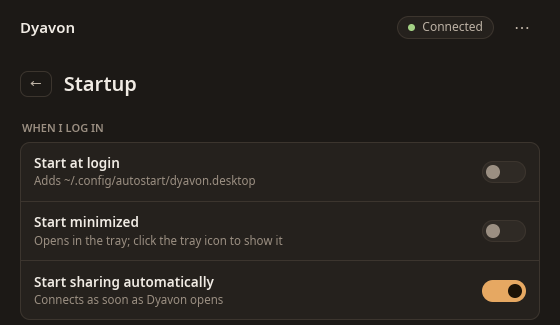
turn onScreens & edges: where the other computer sits
Tells Dyavon which side of your screen the other computer is on, so pushing the pointer that way crosses over.
- The picture shows both screens. The orange bar is the edge you leave from.
- Click the edge of this computer where the pointer should leave, and the edge of the other where it should appear.
- The line underneath confirms it in words, e.g. "Leaves Office-PC at its left edge, appears on Laptop's right edge."
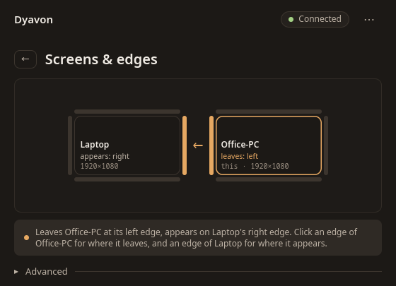
click an edgeSOMETIMES Change these when you have a reason
Clipboard: what's shared, and big files
- Sync clipboard: the master switch for copy-paste between computers.
- What to share: untick Text, Images or Files if you don't want one of them shared.
- Tell me when a file is waiting: a desktop notification for big files.
- Ask before bringing over files larger than 16 MB: raise it (e.g. 500) if you often copy videos or big folders and don't want to be asked.
- Save received files to: leave empty to paste wherever you like. Pick a folder only if files should land there automatically.
- Keep 25 items: how long the Clipboard tab's history is.
- Keep history after restart: off by default, because it writes what you copied (maybe passwords) to disk.
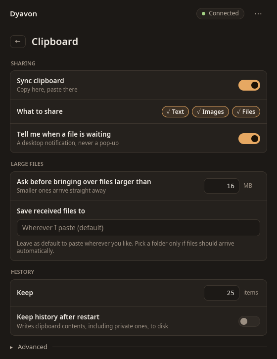
16 MB limitSecurity & pairing: PIN, new devices, removing
- Pair a new device: shows a fresh code, for a third computer or after reinstalling one.
- Connection PIN: set on the computer that is controlled. The other computer must then type it once each time Dyavon starts. Recommended on office or shared networks.
- Paired computers → Remove: forget a computer, e.g. one you sold. It's cut off immediately and needs a new code to come back.
All connections are encrypted whether or not you set a PIN.
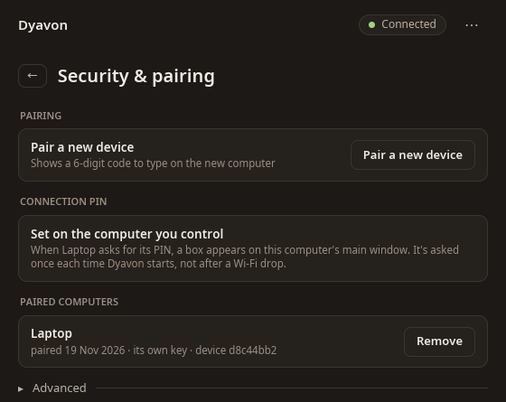
Keyboard & hotkeys
- Take control back: the emergency key, Scroll Lock by default. Change it if your keyboard has no Scroll Lock (many laptops): press Change, then the key you want.
- Switch between computers: shortcuts to jump straight to a computer. Useful with three or more.
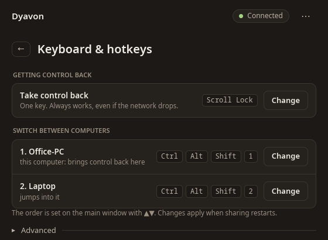
Appearance
Ten colour themes (Graphite, Amber, Plum & Cream, Forest & Mint, Slate & Sand, Porcelain, Coral, Lime, Saffron, Violet). Dyavon's icon in the window, tray and shortcuts changes to match. Match system light / dark follows your Windows or Linux dark mode.
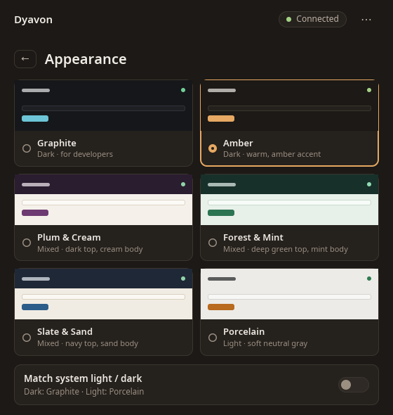
RARELY Leave these alone unless you need them
Connection: computer name and profiles
- Name: how this computer appears on the other one. Change it if both are called something unhelpful like "DESKTOP-7F3K2".
- Profiles: save named copies of all your settings, e.g. "desk" and "travel". For people who move between setups.
- Advanced: network ports and the like. Only touch these if someone helping you asks.
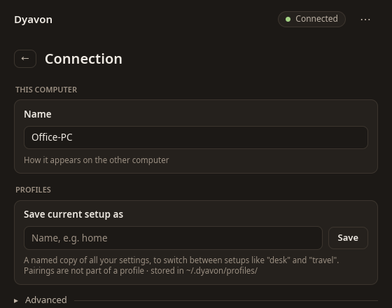
Run as administrator WINDOWS ONLY
At the bottom of Settings → Startup. Only needed if you want the pointer to keep working while an administrator window (an installer, a UAC prompt, some games) is in front.
- Permissions → Restart as administrator. Windows asks "Do you want to allow this app to make changes?" Click Yes.
- Then turn on Start at login as administrator. Windows asks once more. After that it starts with admin rights at every login, without asking again.
Off by default. Turning it off removes everything it set up.
dyavon.exe
Publisher: Unknown
Diagnostics and About
- Diagnostics: where the log file is (Open folder). Needed only when reporting a problem.
- About: the version number, Check now for updates, and Restore defaults (resets your preferences; keeps your pairings and computer name).
Linux also has Share input at the login screen under Startup, which lets you type your login password with the other computer's keyboard. It installs a system service and asks for your password.
If something doesn't work
- Pairing says "no server found"
- Check both computers are on the same network (same router, not a guest Wi-Fi). On Windows, check the firewall (step 2d). Then press Detect on the "Is controlled" computer, or type the other computer's address from its Connection details.
- The code doesn't work
- Codes last 5 minutes and work once. Press Pair a new device for a fresh one, and type it within 5 minutes.
- The pointer won't cross
- Look at the top of both windows: they must say Connected. Check which edge it expects (Settings → Screens & edges). On Windows, an administrator window in front also blocks it: click on something else.
- The pointer is "stuck" on the other computer
- Press Scroll Lock (or the key you chose). Control comes straight back.
- It worked yesterday but not today
- Is Dyavon open on both? Turn on Start at login on both so it always is. If the address of a computer changed (new router), Dyavon usually finds it again within seconds.
- I reinstalled Windows on one computer
- Pair again: Pair a new device on the computer that shares its mouse. Then remove the old entry under Security & pairing.
Removing Dyavon
Open Settings and scroll to the bottom: Remove Dyavon from this computer…. On Windows you can also go to Settings › Apps › Installed apps › Dyavon › Uninstall, which opens the same screen.
- 1Decide about Also delete my settings and pairings. Leave it off if you might install Dyavon again: it then remembers this computer's name and its pairings. Switch it on to remove everything.
- 2Click Remove Dyavon. Windows asks once for permission to remove the firewall rules; Linux asks for your password only if login-screen sharing was set up.
- 3A list shows what was removed. Click Close Dyavon. Nothing of it keeps running.
Licence and disclaimer
Dyavon is free, open-source software under the Apache License 2.0. It is provided "AS IS", without warranties or conditions of any kind, either express or implied. You use it at your own risk. To the extent allowed by law, the authors and contributors are not liable for any damage, loss of data or other harm arising from its use, or from being unable to use it. The licence itself (sections 7 and 8) is what applies; this is only a summary.
Dyavon lets a paired computer control this one and exchange clipboard contents and files with it, so pair only computers you trust. It sends nothing about you anywhere: it checks GitHub for a new version when it starts (you can turn that off in About), and talks only to the computers you pair.
Report a problem
Open an issue at github.com/prashantpal8980/dyavon/issues (free GitHub account needed). Say what you did and what happened, and attach the log file: Settings → Diagnostics → Open folder, file dyavon.log.
- Windows:
%USERPROFILE%\.dyavon\dyavon.log - Linux:
~/.dyavon/dyavon.log